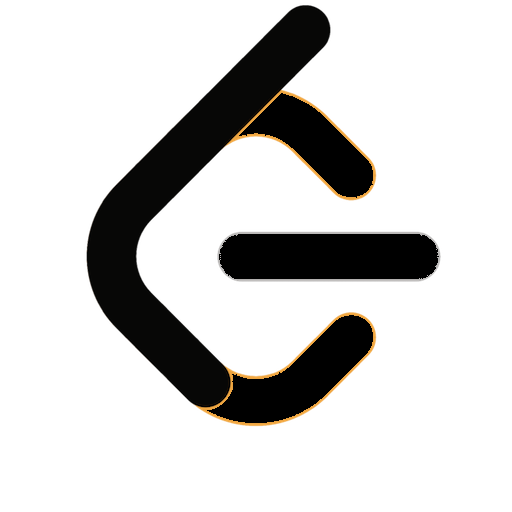
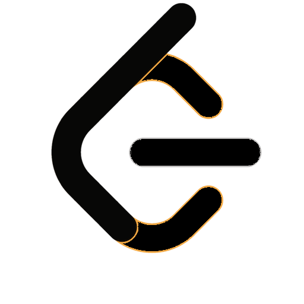

Hello! My name is Holden Clark and I am currently a senior studying computer science with a concentration in data science at the University of North Carolina at Charlotte. I am looking for oppurtunities to further develop my programming skills in a team-environment.
This is my e-portfolio, designed to showcase various projects I’ve worked on. Currently, the website features a brief introduction about me, my resume, a blog feature, and a project named “StarCraft Game Counter”.
However, it’s important to note that several projects are currently missing from the portfolio. This is either because they haven’t been implemented into the website yet, or the projects themselves are still incomplete.
In the near future, I plan to add more features to the website. One such feature is a server-side database, which will be used to store blog posts.
Additionally, I’m excited to share that I’ll be implementing more projects onto the website. One of these is the “Alien Invasion” project, which is a game created using Pygame. My goal is to fully develop this game and make it downloadable for anyone interested in playing it.
Another project I’m eager to showcase is a demo of a bot I’ve created that can play the video game StarCraft 2 against other AI bots.
Thank you for visiting my e-portfolio. Stay tuned for these exciting updates!
 
